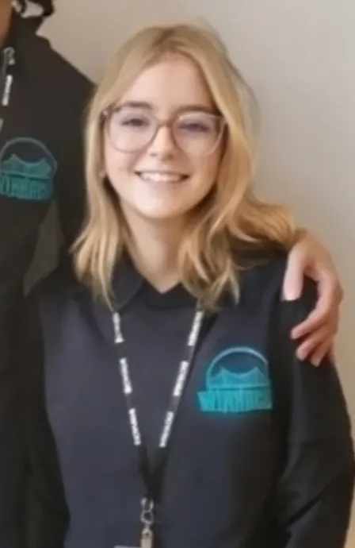
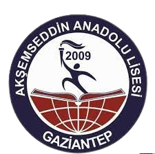
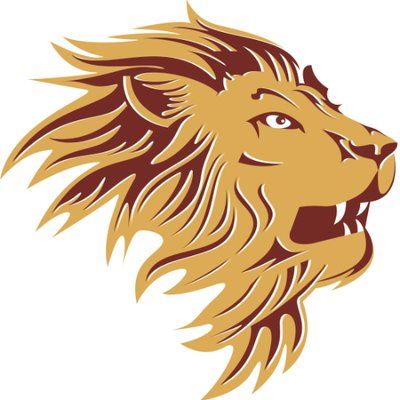
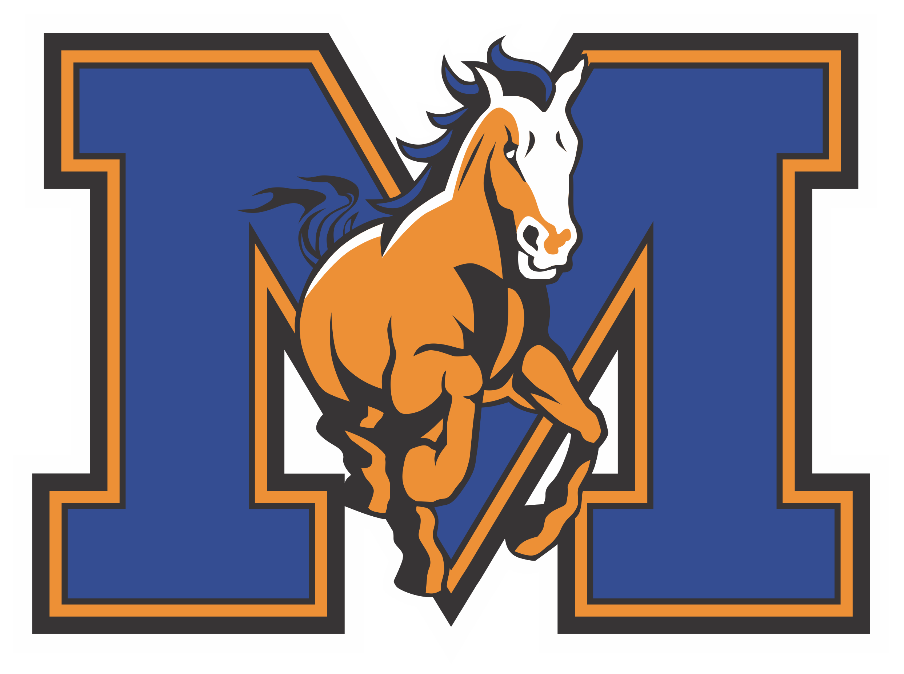
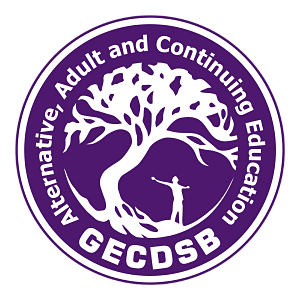
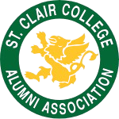
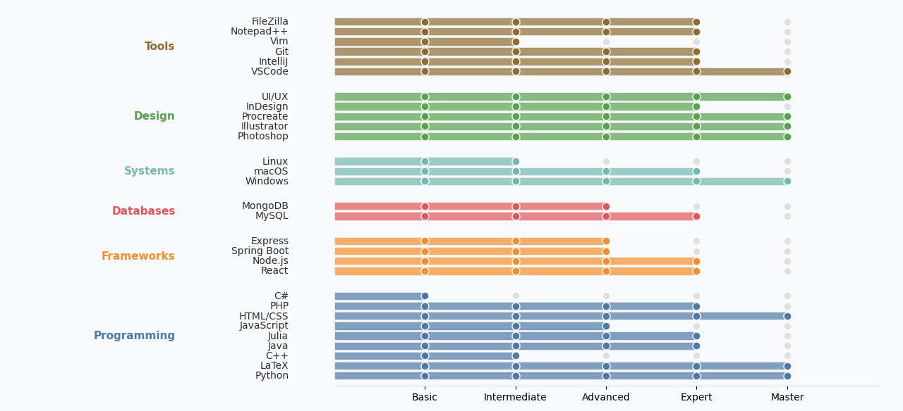

About Me

Hello, my name is Hia (pronounced Haya). I am a Biomedical Engineering Technology (BMET) student at St. Clair College with a strong background in computer programming and a passion for creative problem-solving. Before entering the BMET program, I completed my first year in Computer Programming, where I earned Academic Distinction. This experience strengthened my foundation in software development, algorithms, and system design, and continues to influence how I approach engineering challenges today. I am especially interested in the intersection of engineering, coding, and healthcare technology. I enjoy exploring how software, hardware, and design can work together to create meaningful and impactful solutions in the medical field. Outside of academics, I am a painter and digital artist. Art allows me to think creatively, approach problems from unique perspectives, and balance technical precision with imagination. I also enjoy building coding projects that combine functionality with thoughtful design. As a Linux enthusiast, I enjoy experimenting with open-source tools and technologies to continuously expand my skills. My long-term goal is to connect engineering, programming, and art to develop innovations that positively impact people’s lives. I would be glad to share more about my interests and experiences with you!
Hobbies
- Gaming (Geometry Dash, osu! catch, chess, Roblox, Heart of Tibet, Giza, Danganronpa V3)
- Tinkering with projects and learning new things
- Delving into technology-based ideas
- Mathematics, Art, LaTeX
- Reading books (mystery, thriller, horror, mathematics, computer science)
- Listening to music (pop, rock, classical)
- Watching movies and Kdrama (mystery, thriller, horror)
Education
I was born to travel and learn in different places. One of the longest experiences in my life was high school, where I attended four different schools to complete my education.

Akşemsettin Anadolu Lisesi (Turkey)
2019 - 2020

Leamington District Secondary School (Canada)
2020 - 2023

Vincent Massey Secondary School (Canada)
2023 - 2024

Adult & Continuing Education (Canada)
2024

St. Clair College (Canada)
2024 - Present
Employment History
Software Development
- Learning and mastering computer science concepts like algorithms, data structures, and software design patterns (2021-2022).
- Building and managing codebases using Git and GitHub (2022-Present).
- Collaborating on group projects to develop teamwork and communication skills (2021-2022).
- Exploring various programming languages and technologies, including web development, mobile apps, and cybersecurity (2022-Present).
- Developing problem-solving skills through coding challenges and projects (2021-Present).
Artistic Pursuits
- Creating digital art and illustrations using Adobe Creative Suite (2019-Present).
- Developing a unique artistic style and brand, showcased on social media platforms (2020-Present).
- Taking on commissioned art pieces and projects, working with clients to bring their visions to life (2022-Present).
- Experimenting with different mediums and techniques to expand artistic skills and knowledge (2020-Present).
Skills
- Programming languages: LaTeX, C++, Python, Julia, Java, C#, HTML, CSS, PHP, JavaScript, Lua, Ruby, Go
- Development frameworks: Spring Boot, React, Node.js, Express
- Databases: MySQL, MongoDB
- Operating Systems: Windows, macOS, Linux
- Artistic software: Adobe Creative Suite (Photoshop, Illustrator, InDesign), Procreate
- Strong understanding of design principles and human-computer interaction
- Digital drawing and illustration on iPad using Procreate
- Experimenting with various traditional and digital art mediums
